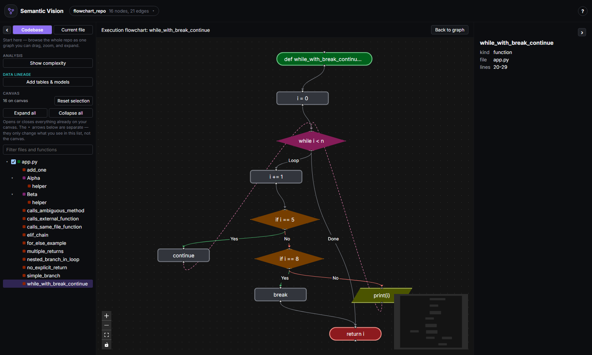
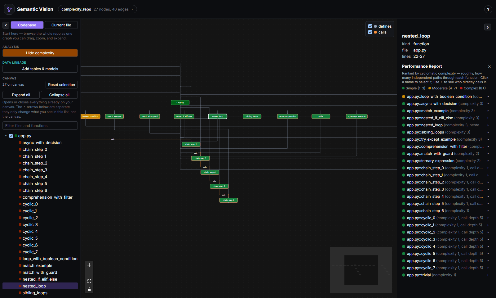
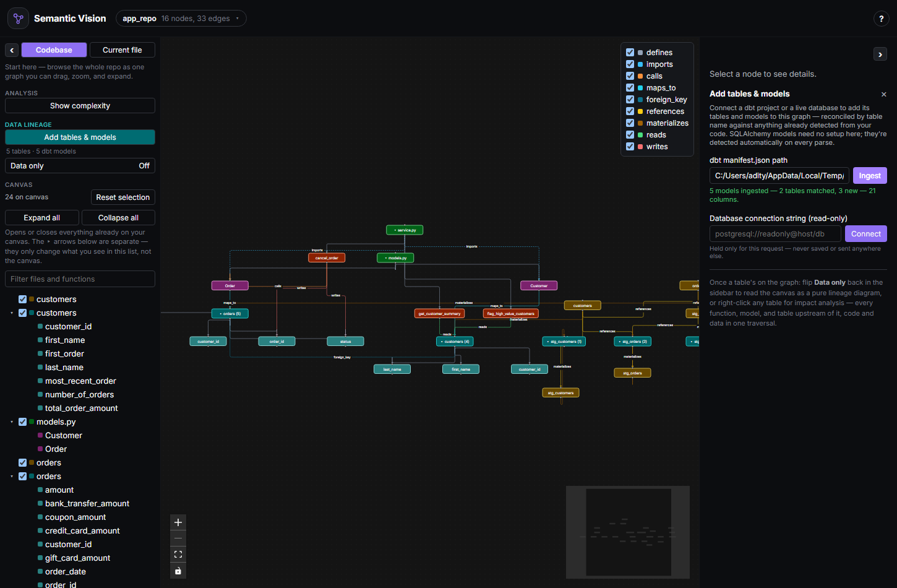
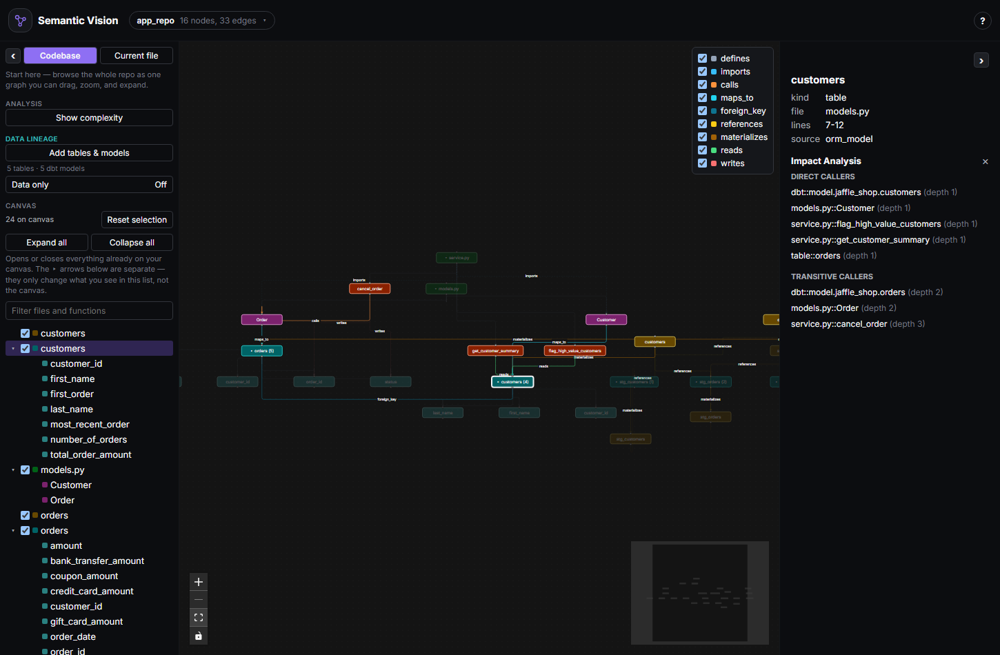

Every feature that would take an hour of grepping — on one screen
Everything below is a right-click away, on the exact code you loaded, not a rough summary.
See the whole call graph, and what breaks if you touch it
Every directory, file, class, and function as a zoomable, color-coded graph with call/import/defines edges — structure that would otherwise take an hour of grepping to piece together by hand.
Right-click any function for impact analysis: every direct and transitive caller, circular call chains flagged instead of silently mishandled, the whole chain highlighted live on the graph.
- Real-time search across the whole repo, or scoped to one file
- Dragged layout and analysis state persist automatically
Trace exactly how a function behaves
Right-click any function for its execution flowchart, built from its real AST/CST rather than a rough summary: entry and return points, decisions with Yes/No edges, loops with a visible back-edge, I/O calls, and calls out to other functions in the repo — each in its own conventional flowchart shape.
Works for both Python and JS/TS, including switch fallthrough, do...while's bottom-condition check, and labeled break/continue.

See which functions are actually worth worrying about
Toggle Show complexity for a cyclomatic-complexity
heatmap over the whole graph and a ranked report, computed from a
real AST walk — decisions, boolean-operator chains, comprehension
filters, match cases, and nested-loop hotspots all
count, not just a line-count guess.
Click any entry to jump to it on the graph; the drill-down shows its direct callers cross-referenced with their own scores, so you can tell a complex-but-unused function apart from one half the codebase depends on.

Never write another docstring by hand
Right-click any function and choose Document to stream real Markdown documentation — Purpose, Parameters, Returns, Side Effects, Notes — assembled from its actual source, callers, callees, and parent class. Right-click a file for a module-level summary from its imports and signatures, without ever sending a function body.
Pick your provider: a local Ollama model (free, nothing leaves your machine), OpenAI, or Anthropic. Nothing is saved until you click Save.
See where your code touches your data — down to the column
Three sources feed the same graph, reconciled by table name, so the same table only ever shows up once.
Detected automatically, or connected explicitly
- SQLAlchemy models — declarative classes are detected on every parse, no setup: each becomes a table node with columns, foreign keys as edges, every reading/writing function connected down to the specific column.
- dbt — point it at a
manifest.jsonyour owndbt compilealready produced to pull in every model, itsref()dependencies, and the table it materializes. - A live database — paste a read-only connection string to introspect the real schema and see where your ORM models have drifted from what's actually deployed.

Impact analysis that crosses code and data in one traversal
Flip Data only to dim everything that isn't a table, a dbt model, or code that reads/writes one — the same graph, filtered to a lineage-only reading.
Right-click a table or a single column exactly like a function to see every function, model, and table upstream of it — the way to answer "what actually breaks if I rename this column, drop this table, or change what this dbt model materializes" before doing it, not after.

Zero setup, fully local, picks up where you left off
Right inside your editor
Install the VS Code extension and get the full graph, impact analysis, and everything else in a panel next to your code — no separate browser tab, no Python or uv to install, the backend ships bundled in.
Pick up exactly where you left off
Dragged layout, saved docs, and analysis state persist locally and restore instantly. Save location defaults to the repo's .git root, auto-detected even from a scoped-down subfolder.
Fast, local, and private
A FastAPI backend statically parses your code — Python's own ast, tree-sitter for JS/TS. No account, no cloud, no telemetry. Code is never executed, and nothing leaves your machine unless you explicitly ask for AI docs.
Benchmarked against real, well-known open-source repos
Not this project's own fixtures — one large, popular repo per supported language.
| Language | Repo | Files | Parse — cold | Parse — warm | Render in browser |
|---|---|---|---|---|---|
| Python | fastapi/fastapi | 1,138 | 23.25s | 4.08s | 7.20–7.84s |
| JavaScript | three.js | 752 | 29.33s | 1.98s | 4.88–5.01s |
| TypeScript | nestjs/nest | 1,907 | 39.68s | 2.48s | 6.85–6.88s |
What works today
| Feature | Python | JavaScript / TypeScript |
|---|---|---|
| Call graph — imports, classes, functions, calls | ✓ | ✓ |
| Impact analysis (upstream callers, cycle detection) | ✓ | ✓ |
| Complexity report | ✓ | ✓ |
| Execution flowcharts | ✓ | ✓ |
| AI-generated documentation | ✓ | ✓ |
| Code-to-data lineage (SQLAlchemy, dbt, live DB) | ✓ | — |
| Docker packaging / one-command setup | ✓ | ✓ |
Three ways to try it — pick one
Try the live demo
Explore two real, precomputed repos — one Python, one TypeScript — right in your browser. No backend, no account, nothing to set up.
Open the demo →VS Code extension
Install from the Marketplace and open any Python or JS/TS repo. The backend ships bundled — no Python or Node toolchain required.
View on Marketplace →Run it locally, or via Docker
Clone the repo and run the backend + frontend yourself, or a single docker compose up --build — both fully documented.